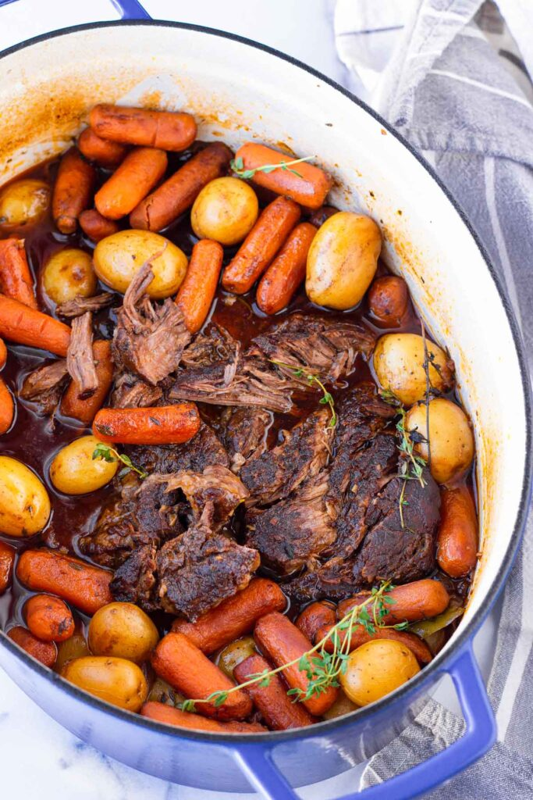

Slow-Cooker Pot Roast Recipe

The Greatest Slow-Cooker Pot Roast Recipe Known to Man
Pot Roast's are a staple food across working class American families
because of its easy to prepare, hands off cooking approach, and affordable
ingrediants. One can easily prepare all the ingrediants the night before,
put them all in a slow cooker before leaving for work, and have a hot and
ready meal available for them when they get home.
Many of the ingrediants listed are easily replaced with your personal
favorites, and the recipe can easily be changed by any novice once they
figure out what they like! With that, let's get our ingrediants ready:
Ingrediants
-
3-5lb. Frozen Chuck Roast (depending on the size of your slow cooker)
- 1 Pkg. Baby Carrots
- 1/2 Onion
- 2-3 Russet Potatoes (peeled and cubed)
- 4-6 Cloves Garlic (peeled)
- 1 Cup of Red Wine
- 3 Teaspoons Coarse Salt
- 2 Teaspoons Coarse Pepper
- Cayenne Powder (optional)
Steps
-
Start off by placing a light layer of seasoning on the bottom of the
cooker along with 2-3 cloves of your garlic.
This will make sure that the bottom of your roast gets seasoned.
-
Place your frozen roast in the cooker.
The reason I like to use a frozen roast, is because the added water as
it cooks helps keep the meat juicy, preventing it from drying out. If
you are like me and someitmes have a varying end shift time, this helps
if you get pulled into a ten hour shift after expecting an eight hour
one.
-
Next, add your cup of red wine. As the alcohol cooks
off, the wine will mix with the veggies and meat juices creating a
delicious flavor.
-
Now place your potato cubes and carrots around your roast.
Try to mix them around so the flavors do not just stay in one spot of
the cooker, but are mixed around evenly.
-
Take your onion half and the rest of the garlic cloves and place them
in the middle, right on top of everything else.
-
Sprinkle the rest of the seasoning, and any other seasoning you want,
over everything and finally place the lid on!
-
Finally, place your cooker on low. Now its time to sit
back, or go to work, and come back in 8-10 hours for a perfectly cooked
Pot Roast!
Return to Main Page